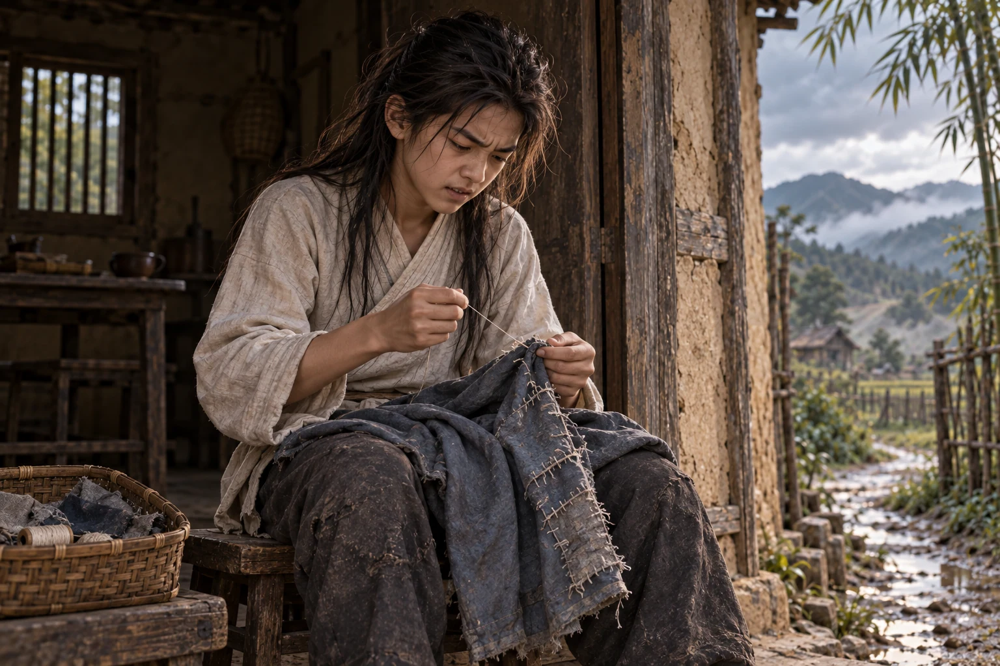
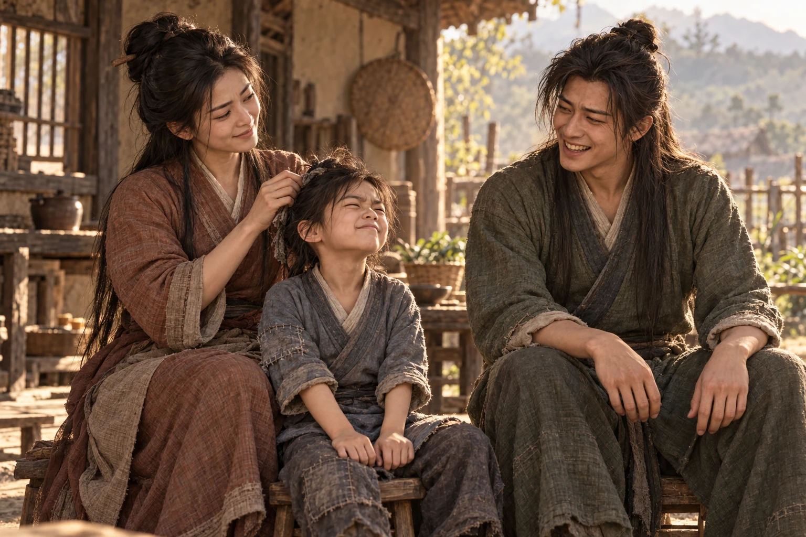
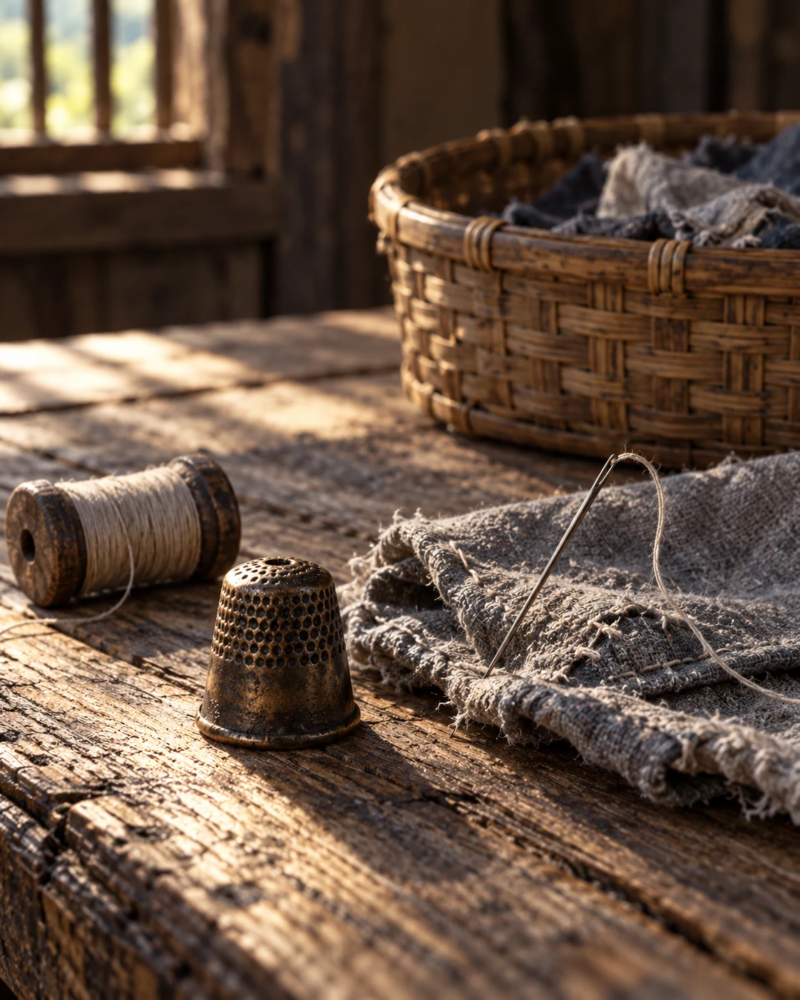
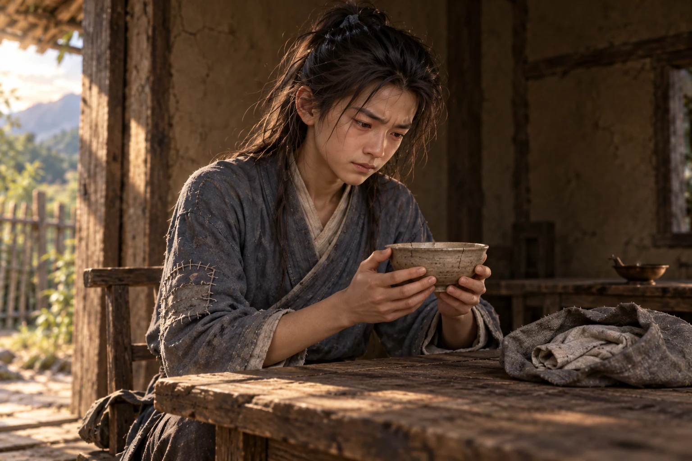

Pintu itu masih harus diangkat sedikit sebelum didorong.
lupa melakukannya. Bahunya membentur papan, dan rumah yang kosong itu menyambutnya dengan bunyi keras yang memalukan.
Ia mundur setapak, mengusap bahu, lalu memandang pintu dengan mata menyipit.
“Aku belum pergi sehari penuh, kau sudah lupa kepada tuanmu?” Dani mendorong pintu dengan bahu. “Baiklah. Kita lihat siapa lebih keras kepala.”
Papan bawahnya mengganjal tanah. Hujan sejak pagi telah membuat kayunya mengembang; di tepi ambang, air masih menggenang dalam cekungan bekas tumit. Dani menyelipkan ujung sepatu, mengangkat daun pintu dengan kedua tangan, lalu mendorongnya. Engselnya menjerit.
Dani mengatur napas, lalu mengusap bekas lumpur pada telapaknya. Ia hampir menoleh untuk memastikan ibunya tidak melihat cara bodohnya membuka pintu.
Ia melangkah masuk sambil menundukkan kepala, kendati palang di atas pintu masih cukup tinggi untuk dilewatinya.
“Ibu, aku—”
Perkataan itu telanjur keluar.
Dani berhenti dengan satu kaki di dalam rumah. Mulutnya masih terbuka sedikit. Tatapannya bergerak ke dekat tungku, seolah ia belum selesai menunggu seseorang menoleh.
Di dekat tungku, seutas tali tergantung dari paku bambu. Tidak ada ikatan sayuran di sana. Bangku pendek berada miring di bawah meja, persis seperti terakhir kali ia meninggalkannya. Cahaya dari celah atap jatuh pada lantai tanah, memperlihatkan jejak air yang telah mengering di antara dua genangan baru.
Ia menarik kaki yang satunya masuk.
“Aku tahu Ibu sudah tidak di sini,” gumamnya.
Entah kepada siapa.
Udara di dalam lebih dingin daripada di luar. Ada bau abu basah, kayu lembap, dan kain yang terlalu lama disimpan. Dani mengernyit, lalu melemparkan ikatan ranting yang dibawanya ke samping tungku. Beberapa patahan terpental. Ia membiarkannya berserakan.
Ujung lengan kirinya tersangkut pada serpihan pintu ketika ia berbalik. Terdengar bunyi sobekan kecil.
menatap kain itu. “Ibu baru memperbaiki bagian itu,” gumamnya.
Ia menariknya dengan kasar.
Sobekannya bertambah panjang.
Untuk sesaat ia berdiri diam. Rahangnya mengunci; giginya bergemeretak sekali, sementara matanya menatap tajam sobekan yang melebar. Jari-jarinya mengepal, lalu terbuka mendadak ketika ia menghantam kusen dengan telapak.
Debu berjatuhan dari atas kepalanya.
Ia menutup mata rapat-rapat.
Rumah itu rupanya masih punya cukup tenaga untuk membalas.
Ketika akhirnya ia membuka mata, sejumput debu melekat di bulu matanya. Ia mengusapnya dengan punggung tangan, terbatuk, lalu tertawa sekali—pendek, kesal, hampir seperti orang tersedak.
Ia menepuk bahunya, masih merengut. Kali ini ia membiarkan pintu itu tanpa balasan.
Perutnya berbunyi.
Ia merogoh bagian dalam baju dan mengeluarkan bungkusan kain kecil. Sepotong roti pipih berada di dalamnya, keras pada pinggiran dan sedikit lembap di tengah. Ia menimbangnya di telapak, mematahkan ujungnya dengan susah payah, lalu memasukkan potongan itu ke mulut.
Giginya seperti sedang mengunyah tutup peti.
Di samping tungku masih ada tempayan air. Dani mengangkat penutupnya, memeriksa bagian dalam, kemudian mengambil gayung. Airnya tidak banyak, tetapi cukup bersih. Ia menuangkannya ke mangkuk, duduk di bangku pendek, dan mencelupkan roti sampai permukaannya melunak.
Tangannya mengambil mangkuk kedua dari rak.
Ia baru menyadarinya setelah meletakkan mangkuk itu di seberang tempat duduknya.
Ada retakan halus di bibirnya. selalu memutar bagian yang retak itu menjauhi mulut ketika minum. Dahulu pernah bertanya mengapa mangkuk itu tidak dibuang saja.
Kenangan
“Selama masih bisa dipakai, untuk apa kita membuangnya, Dani?” Ibunya memutar mangkuk itu di telapak, menjauhkan retakannya dari mulut. Dani mengikuti gerakan tersebut dengan mata.
“Tetapi bagaimana kalau mangkuk itu pecah ketika Ibu memegangnya?” tanya Dani.
“Asalkan tidak ada yang menjatuhkannya lagi, tangan Ibu masih aman,” jawab Mu Nianci.
Dani menarik siku dari tepi meja. “Aku hanya bertanya, Bu. Kali ini belum kusentuh mangkuknya.”
“Siapa yang memakainya untuk menangkap katak?” tanya Mu Nianci.
“Kataknya juga ingin melihat rumah kita, Bu. Masa tamu disuruh berdesakan di mangkuk sekecil itu?”
Mu Nianci berhenti mengusap mangkuk. “Kalau kataknya melompat dan mangkuk ini pecah, apakah ia yang akan mencari penggantinya?”
“Nanti kuganti. Yang lebih besar.” Dani melirik wajah ibunya, lalu buru-buru menambahkan, “Kalau aku sudah punya uang.”
Ia melihat alis ibunya terangkat dan buru-buru memeriksa kolong meja, seolah ada urusan mendesak di sana.
“Ketika kutaruh di dalam, ia diam saja. Aku tidak tahu ia akan melompat sejauh itu,” kata Dani.
Mu Nianci menahan sudut bibirnya. “Karena itu, sebelum meminjam barang, pikirkan dahulu apakah engkau sanggup menjaganya. Ibu tidak melarangmu bermain.” Dani mengangguk sambil mencari binatang yang tadi dilepasnya.
Ibunya tidak tertawa sampai katak itu ditemukan di bawah keranjang jahitan.
Dani memandangi mangkuk retak tersebut. Roti dalam genggamannya menyerap air terlalu banyak, dan sepotong kecil terlepas, jatuh kembali ke mangkuknya sendiri.
Ia buru-buru menyendoknya dengan jari.
“Hampir saja makananku ikut terbuang,” katanya dengan mulut penuh.
Mangkuk di seberang tetap kosong.
Ia menghabiskan separuh roti. Separuh lainnya dibungkus lagi sebelum perutnya sempat mengajukan keberatan. Ia mengikat kain itu dua kali, lalu menyelipkannya jauh ke dalam baju.
Di luar, air menetes dari ujung atap. Tiga tetes berurutan, jeda, lalu satu tetes lagi. Ia mendengarkannya sambil menjilat sisa remah di ibu jari.
Ia datang untuk mengambil jarum.
Itu saja, katanya kepada diri sendiri sejak melihat atap rumah dari tikungan jalan. Lengan bajunya berlubang dan jarum ada di rumah. Alasan itu mudah dipertahankan. Mengakui bahwa ia merindukan suara ibunya jauh lebih sukar; kalau ia datang hanya untuk mendengarnya lagi, ia harus mengakui pula bahwa penantian itu tidak akan mendapat jawaban.
bangkit terlalu cepat. Bangku di belakangnya terguling.
Bunyinya membuat ia menoleh ke sudut tempat pembaringan berada.
Tikar di sana tergulung. Selimut tipis sudah dilipatnya sendiri, buruk dan tidak rata, dengan salah satu ujung menyentuh lantai.
Ia menegakkan bangku. Kali ini pelan-pelan.
Keranjang jahitan tersimpan di bawah meja, tertutup kain kelabu. Dani berjongkok dan menariknya keluar. Satu bilah anyamannya patah, mencuat seperti duri. Ia menekannya kembali dengan kuku sebelum mengangkat penutup.
Gulungan benang. Potongan kain. Sebuah yang bagian tepinya menghitam. Jarum-jarum tertancap pada bantalan kecil, begitu rapi sehingga ia langsung tahu mana yang pernah disentuhnya dan mana yang tidak.
Jarum paling besar miring sendirian.
Ia mendengus. Sebelah sudut bibirnya terangkat, tetapi senyum kecil itu lenyap sebelum ia sempat menunduk lagi.
“Jarum besar itu masih miring seperti waktu kukembalikan,” gumam Dani.
Ia pernah mencoba mengembalikan jarum itu tanpa ketahuan. menemukannya pada hari yang sama.
Kenangan
“Untuk apa kau mengambil ini?” tanya Mu Nianci.
Jarum besar itu terjepit di antara dua jari ibunya. Dani mengangkat dagu sedikit.
“Bukan kuambil, Bu. Kupinjam. Kalau aku hendak mencuri, tentu tidak kutunjukkan kepada Ibu.” Dani menyodorkan benda itu dengan wajah seolah penjelasannya tak mungkin dibantah.
“Apa yang kaujahit sampai perlu jarum sebesar ini?” tanya Mu Nianci.
Ia menggeser kaki ke bawah bangku.
“Aku hendak memperbaiki sepatuku sendiri supaya Ibu tidak perlu mengerjakannya,” jawab .
Pandangan Mu Nianci mengikuti gerakan kakinya. Ia mengulurkan tangan, menunggu.
Dani menyerahkan sepatunya dengan enggan, lalu menunjuk tumitnya seakan sedang memperlihatkan hasil pekerjaan yang patut dibanggakan.
Ibunya mengangkat sepatu tersebut. Jahitan Dani menembus lapisan luar, lapisan dalam, dan sehelai kain alas yang seharusnya bisa dilepas. Semuanya menyatu menjadi benjolan keras. “Kau bisa berjalan dengan ini?”
“Tentu masih bisa kupakai berjalan, Bu,” jawab Dani.
Ibunya mengangkat sebelah alis. Dani merapatkan jari-jari kakinya ke lantai.
“Hanya saja kakiku harus dimiringkan sedikit,” aku Dani.
Mu Nianci mencoba menarik kain alas itu. Sepatunya ikut terangkat. “Sekarang kakimu yang harus menyesuaikan.”
“Kalau kakiku sudah besar, barangkali jahitannya ikut melonggar, Bu,” balas Dani.
“Kakimu akan tumbuh, Dani. Apa kau mengira ruang di dalam sepatu ini akan bertambah sendiri?” tanya .
Mulut Dani sudah terbuka. Ia menutupnya lagi, meraih ujung sepatu, lalu melepaskannya ketika ibunya belum mau memberikan.
“Jangan Ibu bongkar semuanya. Aku sudah susah payah menjahit bagian tumitnya,” pinta Dani.
Mu Nianci memandangnya beberapa saat sebelum sudut mulutnya bergerak. Dani paling menyukai saat-saat seperti itu: ketika ibunya berusaha tetap marah dan gagal sedikit demi sedikit.
Kini ia mengambil jarum yang lebih kecil.
Ia duduk dekat pintu untuk memperoleh cahaya, melepaskan baju luarnya, lalu membalik lengan yang sobek. Udara dingin menembus baju dalamnya. Ia menarik lutut ke dada dan menjepit ujung benang di antara gigi.
Lubang jarum itu terlalu kecil.
Ia mendekatkannya ke mata.
Masih terlalu kecil.
“Ibu, jarum sekecil ini pun bisa menundukkanku. Mengapa tidak Ibu ajarkan jurus untuk melawannya?”
Benangnya melengkung setiap kali hendak masuk. membasahi ujungnya, memilinnya, lalu mencoba lagi. Setelah percobaan berikutnya gagal, kedua alisnya bertaut. Ia menekan bibir begitu rapat sampai warnanya memucat, lalu menurunkan kedua tangan dan memandang ke luar dengan rahang mengeras.
Ia bisa memanjat lereng licin tanpa kehilangan pijakan. Ia bisa tahu ranting mana yang kering hanya dengan mematahkannya. Namun, benda sebesar kuku ini memperlakukannya seperti orang bodoh.
Ia mengambil jarum yang lebih besar.
Benang masuk pada percobaan kedua.
“Nah, yang ini mau menurut.” Ia mendekatkan jarum ke cahaya. “Yang kecil tadi terlalu sombong untuk menerima benangku.”
Ia mulai menjahit.
Tusukan pertama terlalu dekat dengan tepi sobekan. Kainnya terurai ketika ditarik. Tusukan kedua menembus ujung jari.
Dani mengumpat, memasukkan jarinya ke mulut, lalu melirik ke dalam rumah.
Tidak ada teguran.
Ia mengeluarkan jari itu perlahan.
Dahulu, untuk perkataan seperti tadi, ibunya cukup menyebut namanya. Tidak perlu keras. Ada cara tertentu mengucapkan “Dani” yang membuat punggungnya langsung tegak, meskipun mulutnya biasanya masih mencoba mencari alasan.
Sekarang ia bisa mengatakan apa saja.
Ia menunduk lagi, memilih sepotong kain dari keranjang, dan menempelkannya di balik sobekan. Kali ini ia menusuk lebih jauh dari tepinya.
Jahitannya berjalan miring. Ia membongkar dua tusukan, memperbaikinya, lalu berhenti ketika menyadari ia sedang menjahit kedua sisi lengan menjadi satu. Matanya membesar, kemudian menyipit tajam. Napasnya menyembur dari hidung; kain itu diremasnya sampai buku-buku jarinya memutih.
“Ah!”
Baju itu dilemparkannya ke lantai.
Jarum ikut terlepas.
langsung membeku. Jarum itu peninggalan ibunya, dan ia baru saja melemparkannya demi melampiaskan amarah kepada pekerjaan yang tidak kunjung berhasil. Bagaimana jika benda sekecil itu hilang di lantai tanah? Napasnya tertahan; kedua tangannya menggantung kaku di atas lutut.
Ia menatap lantai di antara kakinya.
“Jangan.”
Ia merangkak, meraba tanah dengan telapak, lalu menahan napas saat menemukan kilatan kecil di dekat kaki bangku. Jarumnya hampir masuk ke celah lantai yang mengering dan retak.
Dengan dua jari, ia mengangkatnya hati-hati.
Ia duduk kembali tanpa berkata apa-apa. Baju diambil, ditepuk untuk membersihkan debu, lalu diletakkan di pangkuan.
Beberapa saat kemudian, ia mulai membongkar jahitannya.

Hujan berhenti sepenuhnya ketika tambalan itu selesai.
Hasilnya buruk. Kain abu-abu pada lengan bajunya mengerut, dikelilingi jahitan pucat yang panjang-pendek seperti pagar dipasang orang mengantuk. Tetapi ketika Dani memasukkan tangan dan menekuk siku, lubangnya tidak terbuka lagi.
Ia mengujinya sekali lagi.
Masih bertahan.
Ia menatap lengan bajunya.
“Kalau Ibu melihat jahitan ini, tentu aku disuruh membongkarnya lagi,” gumam Dani.
Ia berhenti. Ibu jarinya mengusap jahitan yang menonjol, sekali, lalu tangannya diturunkan.
“Biarlah miring, asal angin tidak masuk melalui sikuku,” kata .
Ia mengenakan baju luar tersebut dan menggosok kedua tangan agar hangat. Kemudian ia mengembalikan benang, melipat potongan kain, dan menancapkan jarum pada bantalan.
Tangannya berhenti di atas keranjang.
Jika ia meninggalkan jarum di situ, kelak ia harus kembali lagi.
Dani memandang tambalan di sikunya. Lalu ia menarik jarum itu kembali, memilih segulung benang yang masih cukup banyak, dan membungkus keduanya dalam sisa kain.
Di bawah gulungan benang ada tali pengikat rambut, kusut dan warnanya hampir hilang. Ia mengambilnya, menarik kedua ujungnya untuk memeriksa kekuatannya, kemudian mengikat rambut yang sejak tadi terus jatuh ke mata.
Simpul itu mengingatkannya pada tangan ayahnya.
Ingatan tentang tidak pernah datang utuh. Ada bagian-bagian yang tajam: bekas kasar pada ruas jari, warna lengan baju ketika diangkat, bunyi napas pendek saat Dani memanjat punggungnya. Wajahnya justru sering sulit dipanggil kembali. Semakin keras Dani mencoba mengingat, semakin wajah itu menyerupai seseorang yang terlihat melalui air beriak.
Kenangan
Ia berumur lima tahun pada salah satu pagi yang masih diingatnya.
Ayahnya sedang mengikat rambutnya. Terlalu kencang.

“Kepalaku mau Ayah bawa ke mana?” tanya Dani.
“Duduklah sebentar, Nak. Ayah hampir selesai mengikatnya,” jawab Kang Moan.
“Ayah menariknya terlalu keras! Nanti mataku ikut tertarik ke belakang,” protes Dani.
Kang Moan tertawa, sudut matanya berkerut. Tarikan itu mengendur, kemudian sepasang tangan besar memutar bahunya agar menghadap. “Sekarang coba pandang Ayah. Masih sakit?”
sengaja memicingkan mata sampai hampir tertutup. “Mataku sudah tidak bisa terbuka, Ayah.”
Ayahnya tertawa lebih keras.
mendekat dari samping, memeriksa simpul itu, lalu membukanya tanpa mengatakan sepatah kata pun. Sebelah alisnya terangkat ketika ia melirik Kang Moan.
“Seburuk itukah hasil ikatanku?” tanya Kang Moan.
“Kau mengikat anak atau mengikat kayu bakar?” balas Mu Nianci.
Dani ingat merasa sangat puas karena ibunya memihak kepadanya. Ia menyandarkan punggung pada lutut ibunya, mengangkat dagu kepada sang ayah dengan kemenangan terang-terangan.
Ingatan itu berhenti di sana.
Tidak ada wajah yang jelas setelahnya. Hanya tawanya.
Dani meraba simpul di belakang kepala, mengendurkannya sedikit.
Ia sudah empat belas tahun sekarang. Tangan ayahnya pasti tidak akan terasa sebesar dahulu jika mereka berdiri berhadapan. Barangkali ia sudah cukup tinggi untuk tidak perlu mendongak terlalu jauh.
Ia mencoba membayangkan itu dan gagal.
Tentang bagaimana ayahnya meninggal, yang ia ketahui tidak pernah terasa cukup. Ada pertanyaan-pertanyaan yang semasa ibunya hidup selalu datang pada saat yang keliru: ketika Mu Nianci letih, ketika pekerjaan belum selesai, ketika Dani sendiri terlalu marah untuk mendengarkan jawaban yang tidak sesuai keinginannya.
Besok saja, pikirnya dahulu.
Besok ia bisa bertanya lagi dengan cara lain.
menarik simpul rambutnya sampai terasa sakit, lalu cepat-cepat mengendurkannya.
Ia bangkit dan pergi ke tungku.
Ranting-ranting tadi masih berserakan. Ia memungutnya satu demi satu, memisahkan yang kering dari yang basah. Yang kering cukup untuk menyalakan api kecil. Ia bisa menghangatkan air. Ia bisa duduk sampai gelap, menghabiskan sisa roti, lalu tidur di pembaringan lama.
Ia meletakkan ranting pertama di mulut tungku.
Abu kelabu mengotori ujung jarinya.
Kemarin pun ia bisa melakukan itu. Besok juga.
Perutnya kembali berbunyi.
Dani menoleh ke sudut tempat tempayan beras berada.
Ia tidak perlu membukanya. Terakhir kali, ia telah membalikkan tempayan itu di atas kain dan mengetuk dasarnya, keras-keras, seolah butiran beras mungkin bersembunyi karena takut kepadanya.
Ia tetap membukanya.
Bagian dalamnya bersih.
“Kalau kutatap cukup lama, barangkali kau akan malu dan mengeluarkan beras,” gumam Dani kepada tempayan. Tidak ada sahutan. Ia memasang penutupnya kembali, kali ini tanpa senyum.
Ia memasang penutupnya dengan gerakan lebih keras daripada yang diperlukan.
Ia mengembalikan penutup, lalu duduk berjongkok di depan tungku. Ranting kering itu masih berada di tangannya.
Kalau tinggal, ia harus mencari makanan lagi ketika sisa roti habis. Jalan menuju tempat orang berkumpul berada di arah lain. Rumah ini membuatnya berputar jauh, menghabiskan siang untuk pulang, lalu pagi untuk pergi lagi.
Ia sudah menghitungnya berkali-kali.
Yang belum pernah berhasil dihitungnya adalah berapa jauh ia sanggup berjalan sebelum memikirkan rumah ini dan berbalik. Kalau aku pergi, bukan berarti aku melupakan Ibu, pikir . Ia mencoba mempercayainya. Ibunya dahulu bekerja supaya ia tetap hidup; tinggal di sini sampai bekalnya habis tidak akan membuat pengorbanan itu lebih berarti.
Dengan kesal ia menyelipkan ranting itu ke bawah ikatan kayu yang lain.
“Aku tidak akan menyalakan api hanya untuk dilihat-lihat,” kata Dani.
Perkataannya terdengar terlalu keras di ruangan kecil tersebut.
Ia merendahkan suara ketika menambahkan:
“Lagipula kayunya masih basah; hanya akan memenuhi rumah dengan asap,” tambah Dani.
Kain kelabu penutup keranjang ternyata cukup lebar untuk dijadikan buntalan.
Dani membentangkannya di atas meja. Ia meletakkan bungkusan jarum dan benang di tengah, menambahkan sehelai baju dalam yang masih bisa dipakai, kemudian menimbang-nimbang ibunya.
Benda itu terlalu kecil untuk ibu jarinya, tetapi pas pada jari tengah.
Ia mengetukkannya sekali ke meja.
Bunyinya ringan.
biasa mendorong jarum dengan benda tersebut ketika menjahit lapisan kain yang tebal. Dani baru ingat setelah seluruh tambalan selesai dan jarinya telanjur berlubang.
“Rupanya ini untuk mendorong jarum. Mengapa baru sekarang aku teringat?” gumam Dani.
Ia menatap ujung jarinya yang tertusuk, kemudian menggeleng.
“Akan kubawa juga supaya lain kali jariku tidak tertusuk lagi,” kata .
Ia meletakkan itu bersama benang.
Tidak banyak lagi yang bisa dibawa. Meja terlalu besar. Tempayan tidak berguna untuk perjalanan. Selimut tipis lebih baik daripada tidak punya selimut, tetapi lembap pada bagian bawah; ia membentangkannya dekat pintu, memeriksa tepinya, lalu melipat bagian yang paling kering ke dalam.
Buntalan itu membesar, meski masih cukup untuk dibawa dengan satu tangan.

Ia mengikat dua sudut kain, menariknya untuk menguji, kemudian membuka simpulnya lagi.
Ada sesuatu yang tertinggal.
Dani berdiri di tengah rumah, mengedarkan pandangan.
Keranjang. Bangku. Tikar. Tempayan. Tungku.
Matanya berhenti pada mangkuk retak di atas meja.
Ia mendekat dan mengambilnya. Ibu jarinya bergerak di sepanjang bibir mangkuk sampai menemukan bagian kasar yang dahulu selalu dijauhkan Mu Nianci dari mulut. Kedua bahunya merunduk. Lama ia menatap retakan itu, bibirnya terkatup rapat, matanya mulai memerah meskipun tidak ada debu yang masuk.

Benda itu berat untuk ukurannya. Kalau dimasukkan ke buntalan tanpa pembungkus yang cukup, ia akan pecah. Kalau dibungkus dengan bajunya, tak ada lagi tempat untuk selimut.
Ia mencoba juga.
Buntalan yang semula rapi menjadi gumpalan canggung. Mangkuknya menekan dari dalam, dan simpul tidak bisa ditarik rapat.
Dani menarik lebih keras.
Kain kelabu itu mengeluarkan bunyi kecil.
Ia langsung melepaskan tarikan. Rahangnya menegang, tetapi tangannya justru gemetar di atas simpul yang belum selesai.
“Bodoh sekali aku memaksakan semuanya masuk,” desis .
Kata itu keluar begitu tajam hingga ia sendiri terdiam.
Ia duduk. Membuka buntalan. Mengeluarkan mangkuk. Melipat semuanya kembali.
Lama ia tidak melakukan apa-apa setelahnya.
Di luar, awan mulai terbelah. Cahaya sore menyentuh genangan di depan rumah dan membuat permukaannya berkilat. Sehelai daun bambu jatuh ke dalam air, berputar sebentar, lalu berhenti di tepi jejak kaki.
Dani mengusap wajah dengan kedua telapak tangan.
Ia tidak menangis ketika melakukannya. Setidaknya belum. Tetapi napasnya tiba-tiba menjadi sulit diatur, dan ia membenci tubuhnya karena memilih saat ini untuk bertingkah.
Ia menunggu sampai tenggorokannya bisa dipakai lagi.
“Hanya sebuah mangkuk, tetapi aku bahkan tidak sanggup membawanya,” keluh Dani.
Suaranya serak. Ia menelan ludah, memalingkan wajah dari meja, dan menekan lidah ke langit-langit mulut sampai bibirnya berhenti bergetar.
Ia mengambil sedikit air dari tempayan, membilas mangkuk retak itu, kemudian membersihkan mangkuk yang tadi dipakainya. Keduanya diletakkan terbalik di atas rak agar debu tidak berkumpul di dalam.
Sejenak kemudian, ia memutar mangkuk ibunya sehingga bagian yang retak menghadap dinding.
Dani tahu ibunya tidak akan memakai mangkuk itu lagi. Namun membiarkan bibirnya yang retak menghadap keluar terasa seperti meninggalkan pekerjaan belum selesai. Ia memutarnya untuk menjaga kebiasaan kecil itu, satu hal yang masih dapat dilakukannya sebelum pergi.
Pelita tanah liat tetap berada di meja. Minyaknya sudah lama habis. Dani meluruskan sumbunya dengan ujung kuku, lalu menarik tangan seolah baru menyentuh sesuatu yang panas.
Buntalannya diambil.
Di ambang pintu, ia berhenti.
Jalan setapak masih berlumpur, tetapi hujan sudah menjauh ke balik bukit. Udara membawa bau tanah dan daun yang baru dibasuh. Cahaya menyentuh sebelah wajahnya; sebelah lagi masih berada di dalam bayangan rumah.
Ia memegang kusen yang tadi dipukulnya.
Ada serpihan tipis pada bagian tempat lengan bajunya tersangkut. mengorek pangkalnya dengan kuku, lalu mematahkan ujung yang mencuat. Serpihan itu dilemparkan ke luar.
Sesudahnya ia memandang tangannya sendiri dengan jengkel.
Untuk siapa ia memperbaikinya?
Dani mengangkat dagu. Pada usia empat belas tahun, ia belum cukup tinggi untuk tampak mengancam hanya dengan berdiri diam, tetapi ia telah belajar bahwa orang sering ragu jika ditatap lebih dahulu. Ia mencoba tatapan itu kepada jalan yang kosong.
Jalan itu tidak peduli.
Ia mengembuskan napas melalui hidung. Dagunya masih terangkat, tetapi jemarinya mencengkeram kusen lebih kuat sebelum perlahan terlepas.
“Aku pergi dahulu, Bu. Jarum dan bidalnya kubawa bersamaku,” ucap Dani.
Kali ini ia mengucapkannya dengan sengaja.
Ia menunggu satu tarikan napas, lalu satu lagi. Dari dalam rumah tidak terdengar apa pun. Hanya sisa air hujan yang akhirnya jatuh dari ujung atap dan pecah di dekat sepatunya.
Dani keluar. Ia menarik pintu, tetapi papan bawahnya kembali mengganjal.
Tangan kirinya menggenggam buntalan. Dengan tangan kanan ia mengangkat sedikit daun pintu, persis seperti yang seharusnya dilakukan sejak tadi, lalu merapatkannya ke kusen.
Kali ini pintu itu menutup tanpa perlawanan.
Ia berjalan menuruni setapak. Sepatunya masuk ke lumpur pada langkah ketiga. Ia menyentakkannya terlalu cepat, hampir kehilangan keseimbangan, lalu memaki sambil melompat ke bagian tanah yang lebih keras.
Sesudah beberapa langkah, ia meraba bungkusan roti di dalam bajunya.
Masih ada.
, jarum, dan benang berada dalam buntalan. Tambalan di siku terasa kaku ketika tangannya ditekuk, tetapi jahitannya bertahan.
Di tikungan, ia nyaris menoleh.
menggigit bagian dalam pipinya dan terus berjalan. Baru setelah atap rumah tertutup rumpun bambu, ia membiarkan lengan bajunya menyapu mata.